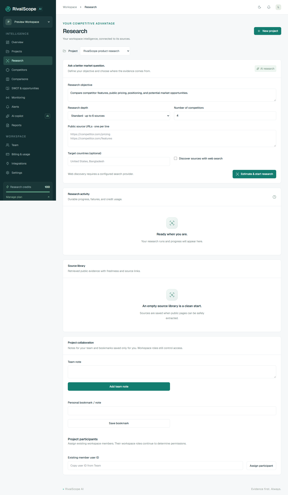

RivalScope AI — বাংলা ব্যবহার নির্দেশিকা
সংস্করণ: বর্তমান স্থানীয় অ্যাপের জন্য · হালনাগাদ: ২৯ অক্টোবর ২০২৬
এই নির্দেশিকায় অ্যাপে এখন যে কাজগুলো করা যায়, সেগুলোর পথ দেখানো হয়েছে। মেনু ও বোতামের ইংরেজি নাম অপরিবর্তিত রাখা হয়েছে, যাতে স্ক্রিনের সঙ্গে মিলিয়ে কাজ করতে পারেন।
আপনার জন্য কোন নির্দেশিকা?
| আপনি যা করতে চান | যে নির্দেশিকা পড়বেন |
|---|---|
| অ্যাকাউন্ট খুলতে, গবেষণা করতে, রিপোর্ট বুঝতে ও ডাউনলোড করতে | সাধারণ ব্যবহারকারীর নির্দেশিকা |
| নিজের ব্যবসার গবেষণা পরিচালনা, দল গঠন, খরচ ও সিদ্ধান্ত দেখভাল করতে | ব্যবসার মালিকের নির্দেশিকা |
| পুরো প্ল্যাটফর্মের সেবা, ব্যবহারকারী প্রবেশাধিকার, প্ল্যান ও গবেষণার সমস্যা সামলাতে | অ্যাডমিন ও পরিচালনা নির্দেশিকা |
দুই ধরনের অ্যাডমিন আলাদা: একটি প্রতিষ্ঠানের ADMIN তার workspace পরিচালনা করেন। Platform Administrator পুরো RivalScope প্ল্যাটফর্মের অনুমোদিত অপারেটর। Workspace-এর OWNER বা ADMIN হলেই কেউ platform administrator হন না।
প্রথমবারের সংক্ষিপ্ত পথ
১. অ্যাপ খুলুন → Get started → নাম, প্রতিষ্ঠানের নাম, ইমেইল ও পাসওয়ার্ড দিন।
২. ইমেইলের verification link খুলে Continue চাপুন।
৩. Projects → Create project দিয়ে ব্যবসার বিবরণ লিখুন।
৪. Research-এ project বেছে উদ্দেশ্য ও public source URL দিন।
৫. Estimate & start research চাপুন → credit estimate দেখুন → সম্মতি দিন।
৬. Research activity-তে অগ্রগতি দেখুন → শেষ হলে findings, supporting sources ও report দেখুন।
৭. Reports থেকে PDF, Word, JSON বা Markdown ডাউনলোড করুন।
স্থানীয় পরীক্ষামূলক পরিবেশের ঠিকানা
| সেবা | ঠিকানা | কার কাজে লাগে |
|---|---|---|
| অ্যাপ | http://localhost:3000 | সবাই |
| স্থানীয় ইমেইল inbox | http://localhost:8025 | নিজের verification/reset/invitation email দেখতে |
| API reference | http://localhost:4000/api/docs | অ্যাডমিন ও developer |
| API readiness | http://localhost:4000/api/health/ready | সেবা চলছে কি না দেখতে |
localhost মানে অ্যাপ চালানো কম্পিউটার। অন্য কম্পিউটার বা ফোন থেকে এই একই ঠিকানা ব্যবহার করে আপনার কম্পিউটারের অ্যাপ খোলা যায় না। Hosting হলে প্রতিষ্ঠানের দেওয়া আসল ওয়েব ঠিকানা ব্যবহার করবেন। স্থানীয় Mailpit inbox-ও production customer inbox নয়।
বর্তমান সুবিধার অবস্থা
| অবস্থা | সুবিধা |
|---|---|
| বর্তমান অ্যাপে আছে | MFA ও recovery codes, session/profile settings, privacy export/deletion, source-based research, feature/pricing matrix, positioning chart, চার ধরনের report export, expiring share links, project notes/participants/bookmarks, ownership transfer, notification preferences, webhook/key management, platform administration |
| অতিরিক্ত setup প্রয়োজন | Google OAuth; Tavily automatic discovery; Stripe checkout/portal; Slack/Discord incoming webhooks; production SMTP ও telemetry |
| Credentials ছাড়া পরীক্ষা | আলাদা test database, deterministic provider fixtures এবং স্পষ্টভাবে চালু করা development billing sandbox; এগুলো বাস্তব payment বা live discovery-এর প্রমাণ নয় |
| Live চালুর আগে | Google/Tavily/Stripe credentials ও account configuration, provider sandbox acceptance, production HTTPS/SMTP/secrets এবং deployment smoke পরীক্ষা |
কোনো provider-এর পাশে Configured দেখালে প্রয়োজনীয় configuration আছে বোঝায়; তা দিয়ে live request সফল হয়েছে বা quota আছে—এমন নিশ্চয়তা পাওয়া যায় না।
ছবি দেখে চিনে নিন


সংরক্ষণ ও প্রিন্ট
একই ফোল্ডারের index.html ব্রাউজারে খুললে পড়ার উপযোগী সংস্করণ পাওয়া যাবে। একসঙ্গে তিনটি নির্দেশিকা পড়তে RIVALSCOPE_MANUAL_BN.html খুলুন। প্রস্তুত PDF হলো RIVALSCOPE_MANUAL_BN.pdf। অ্যাপের গবেষণা report এবং এই ব্যবহার নির্দেশিকা আলাদা নথি।
সাধারণ ব্যবহারকারীর নির্দেশিকা
RivalScope AI · বাংলা · ২৯ অক্টোবর ২০২৬
এটি গবেষক, analyst, editor, viewer এবং নতুন ব্যবহারকারীদের জন্য। আপনার workspace role অনুযায়ী কিছু কাজ অনুমোদিত নাও হতে পারে। ভূমিকা ও অনুমতির তালিকা ব্যবসার মালিকের নির্দেশিকায় আছে।
১. অ্যাকাউন্ট খোলা ও প্রবেশ
নতুন অ্যাকাউন্ট
১. অ্যাপের হোমপেজে Get started বা Create your workspace চাপুন।
২. ফর্মে লিখুন:
| ঘর | কী লিখবেন |
|---|---|
| Your name | আপনার নাম; অন্তত ২ অক্ষর |
| Workspace name | প্রতিষ্ঠানের বা দলের নাম; অন্তত ২ অক্ষর |
| Work email | যে ইমেইল দিয়ে অ্যাকাউন্ট ব্যবহার করবেন |
| Password | অন্তত ১২ অক্ষরের পাসওয়ার্ড |
৩. Create workspace চাপুন। অ্যাকাউন্ট তৈরি হলে dashboard খুলবে এবং আপনি নতুন workspace-এর OWNER হবেন।
৪. নিজের ইমেইলে verification বার্তা দেখুন। বর্তমান স্থানীয় setup-এ Mailpit inbox খুলে নিজের প্রাপকের ইমেইল মিলিয়ে বার্তাটি খুঁজুন।
৫. verification link খুলুন → Verify your email অংশে Continue চাপুন। সফল বার্তা পেলে workspace-এ ফিরে যান।
প্রথম verification link সাধারণত ২৪ ঘণ্টা কার্যকর। Resend email দিয়ে পাওয়া নতুন link এক ঘণ্টা কার্যকর এবং আগের অব্যবহৃত verification link বাতিল হয়।
আগে থেকেই অ্যাকাউন্ট থাকলে
Sign in চাপুন → Work email ও Password লিখুন → Sign in চাপুন। Session শেষ হয়ে গেলে আবার sign in করতে হবে।
পাসওয়ার্ড ভুলে গেলে
১. Sign in পাতায় নিজের ইমেইল লিখুন।
২. Forgot your password? চাপুন।
৩. ইমেইলের reset link খুলে অন্তত ১২ অক্ষরের নতুন password দিন → Continue।
৪. নতুন password দিয়ে আবার sign in করুন। Password reset হলে আগের সব session বাতিল হয়। Reset link এক ঘণ্টা কার্যকর এবং একবারই ব্যবহারযোগ্য।
২. কোন মেনুতে কী পাবেন
| মেনু | এখানে যে কাজ করবেন |
|---|---|
| Overview | Project, competitor, public source ও report-এর সংখ্যা; সাম্প্রতিক activity |
| Projects | নতুন গবেষণার project তৈরি, project খোঁজা ও খোলা, অনুমতি থাকলে archive |
| Research | গবেষণার উদ্দেশ্য/source দেওয়া, credit estimate, অগ্রগতি, findings ও source library |
| Competitors | গবেষণায় পাওয়া প্রতিযোগী ও তাদের direct/indirect classification |
| Comparisons | Feature, pricing, positioning, sentiment, technology ও news findings দেখা/খোঁজা |
| SWOT & opportunities | Strength, weakness, opportunity, threat এবং অন্যান্য strategic interpretation |
| Monitoring | Public page পর্যবেক্ষণ, check interval ও পরিবর্তিত text দেখা |
| Alerts | Research completion ও website change notification; Mark read |
| AI copilot | নির্বাচিত project-এর সংরক্ষিত evidence নিয়ে প্রশ্ন |
| Reports | সম্পন্ন গবেষণার report export |
| Team | অনুমতি থাকলে member invitation, role ও member management |
| Billing & usage | অনুমতি থাকলে plan, available/reserved credit ও লেনদেন |
| Integrations | অনুমতি থাকলে provider setup status, API key তৈরি/বাতিল |
| Settings | অনুমতি অনুযায়ী workspace preferences; password reset ও সব device থেকে logout |
Sidebar-এর উপরের workspace selector দিয়ে প্রতিষ্ঠান বদলাতে পারবেন। কিছু পাতার Project selector দিয়ে কোন project-এর তথ্য দেখছেন তা ঠিক করুন। Mobile-এ sidebar-এ মূলত icon দেখা যায়; একই ক্রমে মেনুগুলো থাকে। উপরের চাঁদ/সূর্য icon দিয়ে theme বদলানো যায়।
শূন্য সংখ্যা বা empty state মানে ওই workspace/project-এ এখনও সংশ্লিষ্ট তথ্য নেই। এগুলো বাজারের কোনো প্রতিষ্ঠানের অবস্থা সম্পর্কে দাবি নয়।
৩. প্রথম project তৈরি
কোথায় যাবেন: Projects
১. Create a research project ফর্ম খুলুন।
২. Project name-এ গবেষণার নাম দিন। যেমন: আমাদের customer support পণ্যের বাজার।
৩. Industry-তে ব্যবসার খাত লিখুন। এটি ঐচ্ছিক।
৪. Business description-এ অন্তত ২০ অক্ষরে আপনার পণ্য, গ্রাহক ও কাজটি ব্যাখ্যা করুন।
উদাহরণ:
আমরা ছোট অনলাইন ব্যবসার জন্য customer support software তৈরি করি। একই জায়গা থেকে গ্রাহকের প্রশ্নের উত্তর দেওয়া ও দলের কাজ ভাগ করাই মূল সুবিধা। বাংলাদেশ ও ইংরেজিভাষী ছোট দলকে লক্ষ্য করছি।
৫. চাইলে Company website (optional)-এ পূর্ণ https:// ঠিকানা দিন।
৬. Create project চাপুন। তৈরি হলে সেই project-এর Research পাতা খুলবে।
দেখতে পাবেন: Project selector-এ আপনার project; শুরুতে research/source/report নাও থাকতে পারে। Project তৈরি করা মাত্র গবেষণা শুরু হয় না এবং কোনো competitor সংখ্যা বানিয়ে দেখানো হয় না।
৪. গবেষণা শুরু
কোথায় যাবেন: Research → Project নির্বাচন

ফর্ম পূরণ
| ঘর | কী করবেন |
|---|---|
| Research objective | কী জানতে চান লিখুন; ১০–২০০০ অক্ষর |
| Research depth | Standard বা Deep নির্বাচন করুন |
| Number of competitors | ১–৮-এর মধ্যে লক্ষ্যসংখ্যা দিন; evidence কম হলে ফলও কম হতে পারে |
| Public source URLs · one per line | প্রতি লাইনে একটি পূর্ণ public URL; নিজে সর্বোচ্চ ৮টি URL দিতে পারেন |
| Target countries (optional) | একাধিক দেশ হলে কমা দিয়ে লিখুন; সর্বোচ্চ ৫টি |
| Discover sources with web search | Automatic discovery দরকার হলে চালু করুন; Tavily setup থাকতে হবে |
উদ্দেশ্যের উদাহরণ:
দেওয়া public page-গুলোর ভিত্তিতে ছোট ব্যবসার customer support পণ্যগুলোর feature, প্রকাশিত pricing ও positioning তুলনা করো। যে দাম বা তথ্য পাওয়া যায় না তা স্পষ্ট করো। সম্ভাব্য differentiation-কে inference হিসেবে আলাদা দেখাও।
বর্তমান পরিবেশে Tavily credential দেওয়া হয়নি। তাই প্রথম গবেষণায় Discover sources with web search বন্ধ রাখুন, এবং পরিচিত competitor-এর আসল pricing/features page-এর public URL দিন। competitor.com বা example.com লেখা placeholder-কে বাস্তব competitor evidence হিসেবে ব্যবহার করবেন না।
Standard-এ সর্বোচ্চ ৬টি এবং Deep-এ সর্বোচ্চ ১২টি source URL প্রক্রিয়াকরণের সীমা আছে। নিজে দেওয়া URL-এর সীমা ৮টি; discovery চালু থাকলে অতিরিক্ত URL পাওয়া যেতে পারে। সব URL সফলভাবে extract হবে—এমন নিশ্চয়তা নেই।
Estimate দেখে শুরু
১. Estimate & start research চাপুন।
২. কত credit reserve হবে, confirmation-এ দেখুন।
৩. শুরু করতে সম্মতি দিন; না চাইলে confirmation বাতিল করুন।
৪. Research queued বার্তা পেলে নিচের Research activity দেখুন। বারবার submit করবেন না; নতুন submit নতুন run তৈরি করতে পারে।
বর্তমান হিসাব:
| গবেষণা | Discovery বন্ধ | Discovery চালু |
|---|---|---|
| Standard | ২১ credits | ২৪ credits |
| Deep | ২৭ credits | ৩০ credits |
এগুলো অ্যাপের বর্তমান product credit unit, টাকা বা provider-এর API খরচ নয়। ভবিষ্যৎ সংস্করণে policy বদলাতে পারে; confirmation-এর সংখ্যাই অনুসরণ করবেন।
অগ্রগতি বোঝা
গবেষণা সাধারণত plan → search → extract → analyze → catalog → verify → report ধাপে চলে। Catalog-এ published products/features/pricing সাজানো হয়; verify-তে আলাদা AI evidence review হয়। Discovery বন্ধ থাকলেও search ধাপটি নিজে দেওয়া URL গোছায়; নতুন web search করে না।
| Status | অর্থ ও করণীয় |
|---|---|
| queued | কাজ সারিতে আছে; কিছুক্ষণ অপেক্ষা করুন |
| running | কাজ চলছে; activity দেখে অপেক্ষা করুন |
| completed | ফল প্রস্তুত; report ও findings দেখুন |
| failed | Error পড়ুন; source/setup সমস্যা ঠিক করে প্রয়োজন হলে নতুন run দিন |
| cancelled | কাজ বন্ধ হয়েছে; ব্যবহৃত credit কাটা হতে পারে, অব্যবহৃত reservation ছাড়ে |
চলমান run বন্ধ করতে Cancel run চাপুন। Cancelling… মানে অনুরোধ গেছে; বর্তমান ধাপ বা network request শেষ হতে কিছু সময় লাগতে পারে। এক workspace-এ একসঙ্গে সর্বোচ্চ ৩টি active run অনুমোদিত।
৫. ফলাফল যাচাই
Research → Latest report / Source library, Comparisons এবং SWOT & opportunities দেখুন। Findings-এর search box দিয়ে খুঁজুন এবং category selector দিয়ে ধরন বাছুন। Supporting sources খুলে quotation ও মূল page-এর link দেখুন।
| Label | কী বোঝায় |
|---|---|
| PARTIALLY_VERIFIED | উদ্ধৃতিটি পাওয়া source text-এর সঙ্গে মিলেছে; পুরো দাবির অর্থ বা সত্যতা স্বাধীনভাবে যাচাই করা হয়েছে—এমন নয় |
| INFERENCE | উৎসের ভিত্তিতে AI-এর ব্যাখ্যা, বিশ্লেষণ বা সম্ভাব্য কৌশল |
| UNVERIFIED | যাচাই নিশ্চিত নয় |
| VERIFIED | যাচাইকৃত হিসেবে চিহ্নিত; বর্তমান automatic research সাধারণ factual finding-কে এই label দেয় না |
| DISPUTED | তথ্য নিয়ে বিরোধ/অনিশ্চয়তা আছে; label থাকলে মূল source পর্যালোচনা করুন |
Direct/Indirect competitor classification-ও AI-এর interpretation। Executive summary, competitor description ও strategic recommendation সরাসরি যাচাইকৃত market fact হিসেবে ধরে নেবেন না।
Source library-তে retrieval time দেখুন। সেটি page সংগ্রহের সময়; page-এর প্রকাশের তারিখ বা ভবিষ্যতেও তথ্যটি অপরিবর্তিত থাকবে—এমন নিশ্চয়তা নয়। Methodology & evidence limitations-এ ব্যর্থ source ও তথ্যের ঘাটতি পড়ুন।
Comparisons পাতায় side-by-side feature/pricing matrix ও category-ভিত্তিক findings আছে। একই project-এ একাধিক run থাকলে finding list-এ আগের run-এর তথ্যও থাকতে পারে; সর্বশেষ run-এর নির্দিষ্ট report দরকার হলে সেই report export করুন।
৬. Report ডাউনলোড
১. Reports মেনু খুলুন।
২. Report-এর title ও সময় মিলিয়ে নিন।
৩. JSON চাপলে structured report; Markdown চাপলে পড়ার উপযোগী text report ডাউনলোড হবে।
৪. Research পাতার Latest report থেকেও export করতে পারেন।
PDF, Word, JSON ও Markdown—চার ধরনের export আছে। PDF/Word-এ findings, supporting quotations, source URL, retrieval time ও limitations থাকে। Download করা report-এ workspace research থাকে; বাইরে দেওয়ার আগে দেখে নিন।
Edit permission থাকলে report-এর Share this report খুলুন। Workspace members বাছলে অনুমোদিত সদস্যকে sign in করতে হবে। External link holders বাছলে confirmation দেওয়ার পরে বাইরের মানুষ link দিয়ে report পড়তে পারবেন। Expiry ১–৩০ দিন; চাইলে অন্তত ১২ অক্ষরের password দিন। নতুন link সঙ্গে সঙ্গে copy করুন। Revoke link দিলে পুরোনো link বন্ধ হয়ে যায়।
৭. AI copilot ব্যবহার
কোথায় যাবেন: AI copilot → Project নির্বাচন
১. আগে ওই project-এ research চালিয়ে evidence সংরক্ষণ করুন।
২. New conversation চাপুন বা বাম পাশ থেকে পুরোনো conversation খুলুন।
৩. নিচের ঘরে প্রশ্ন লিখে তীর বোতাম চাপুন।
উদাহরণ: প্রকাশিত Starter plan-এর দামে কী পার্থক্য আছে? সংশ্লিষ্ট quotation দেখাও।
৪. উত্তর, citation ও limitations পড়ুন। Saved evidence-এ না থাকলে AI-এর কাছ থেকে নিশ্চিত বাজারের তথ্য আশা করবেন না।
প্রতি সফল সংরক্ষিত source-backed response-এর বর্তমান charge ২ credits। প্রাসঙ্গিক evidence না পেলে সেটি জানাতে পারে। বর্তমান retrieval মূলত text matching করে; বাংলা প্রশ্নে ফল প্রাসঙ্গিক না হলে source-এ থাকা pricing, features, product name-এর মতো keyword যোগ করে চেষ্টা করুন।
৮. Monitoring ও Alerts
১. Monitoring খুলুন → Research project বাছুন।
২. Public page URL-এ public pricing, features বা announcement page দিন।
৩. Check every-তে ৬ ঘণ্টা, ২৪ ঘণ্টা বা ৭ দিন নির্বাচন করুন।
৪. Create monitor চাপুন। Worker সাধারণত এক মিনিটের মধ্যে schedule মিলিয়ে নেয়; প্রথম check সম্পন্ন হওয়ার আগে Not yet checked দেখা স্বাভাবিক।
৫. পরিবর্তন হলে monitor-এর Content changed খুলে Previous snapshot ও Current snapshot তুলনা করুন।
৬. Alerts-এ notification পড়ুন; প্রয়োজন হলে Mark read চাপুন।
প্রতি সফল check-এর বর্তমান খরচ ১ credit; page না বদলালেও check সফল হলে charge হয়। এটি public text পরিবর্তন শনাক্ত করে—অবশ্যই pricing change হয়েছে বা ব্যবসায়িক গুরুত্ব বেশি—এমন সিদ্ধান্ত নিজে থেকে দেয় না। Pause দিয়ে থামান; Resume দিয়ে আবার enabled করুন। Credits/subscription সমস্যা থাকলে enabled দেখালেও schedule check নাও করতে পারে; মালিককে জানান।
৯. Sign out ও project archive
Desktop-এ sidebar-এর নিচের logout icon দিয়ে বর্তমান session থেকে বের হন। Settings → Sign out all devices দিলে এই device-সহ সব session বন্ধ হবে।
Projects → Edit project থেকে নাম, business description, industry, website ও target market বদলান। Archive করতে সংশ্লিষ্ট project-এর × icon → confirmation ব্যবহার করুন। আপনার edit অনুমতি থাকতে হবে। Active research থাকলে আগে cancel করে শেষ হতে দিন। Archived projects → Restore project দিয়ে ফিরিয়ে আনতে পারেন; plan limit মানতে হবে এবং monitors আলাদা করে enable করতে হবে।
১০. নতুন security ও collaboration সুবিধা
Settings → Your profile → Save profile দিয়ে display name বদলান। Active sessions-এ নিজের ও অন্য browser-এর session দেখুন; Revoke দিয়ে বন্ধ করুন। নিজের session বন্ধ করলে আবার sign in করতে হবে।
Settings → Two-step verification-এ current password দিয়ে Set up authenticator চাপুন। Authenticator app-এ setup key যোগ করে time-based ছয় সংখ্যার code নিন। Verify & enable MFA চাপুন। দেখানো recovery codes নিরাপদে রাখুন—প্রতিটি একবার ব্যবহার করা যায় এবং পরে একই তালিকা আর দেখা যায় না। Login-এ password-এর পরে authenticator অথবা recovery code লাগবে। Replace recovery codes দিলে পুরোনোগুলো বাতিল হয়। MFA চালু/বন্ধ করলে অন্য session-গুলো বন্ধ হয়।
Google OAuth configured থাকলে login-এর Google button ব্যবহার করতে পারবেন। আগে password দিয়ে account খুলে থাকলে Settings → Google sign-in → Connect Google থেকে একই email-এর Google account যুক্ত করুন। Credential setup না থাকলে পরিষ্কার setup message দেখাবে।
Research → Project collaboration-এ team note, ব্যক্তিগত bookmark ও participants পাবেন। Team note দল দেখতে পারে; personal bookmark শুধু নিজের। Participant assignment workspace role বদলায় না এবং project-কে private করে না।
Comparisons-এ project ও competitor নির্বাচন করুন। Feature-এর quotation ও pricing source খুলে দেখুন। প্রকাশিত তথ্য না থাকলে gap দেখাবে; অনুমান করে দাম বসানো হয় না। Chart-এ compatible monthly prices ও documented feature count দেখা যায়—এটি market share বা product quality score নয়। Edit permission থাকলে selection-এর নাম দিয়ে comparison save করতে পারবেন।
Settings → Email notification preferences-এ instant, daily বা weekly বেছে save করুন। Alerts → Mark read শুধু নিজের read state বদলায়। Workspace owner/admin Integrations থেকে Slack/Discord incoming webhook যুক্ত করতে পারেন।
Alerts → Watch phrase rules-এ monitor, rule name, exact phrase, appeared/disappeared condition এবং নিজের priority বেছে Create alert rule চাপুন। Monitoring-এর পর পরবর্তী snapshots-এ phrase নতুন করে আসা বা চলে গেলে alert হবে। এটি literal text rule; business change নিশ্চিত করার জন্য snapshot দেখুন। Rule pause/enable করা যায়। Delete করলে তার matched history-ও মুছে যায়—confirmation পড়ে সিদ্ধান্ত নিন।
Owner ও billing manager Billing & usage → Consumption by activity-এ research/copilot/monitoring-এর actual credit consumption এবং গত ৩০ দিনের daily totals দেখতে পারেন। Grant ও temporary reservation consumption হিসেবে গণনা হয় না।
Settings → Data exports → Export account JSON নিজের account data দেয়। Deletion controls-এ password ও MFA দিয়ে নির্দিষ্ট confirmation phrase লিখতে হয়। Account মুছতে আগে নিজের সব workspace-এর ownership transfer বা workspace delete করতে হবে। Workspace deletion-এর অনুমতি শুধু owner-এর। প্রয়োজনীয় pseudonymous audit ও accounting records রাখা হয়।
১১. সমস্যা হলে
| যা দেখছেন | কী করবেন |
|---|---|
| Verify your email… | নিজের inbox থেকে verification শেষ করুন; প্রয়োজন হলে Resend email |
| Workspace access denied | সঠিক workspace/role আছে কি না মালিকের সঙ্গে মিলিয়ে নিন |
| Session expired / Sign in to continue | আবার sign in করুন |
| Insufficient available research credits | Billing & usage দেখতে মালিককে বলুন; অন্য run-এর reservation আছে কি না দেখুন |
| TAVILY_API_KEY প্রয়োজন | Discovery বন্ধ করে পরিচিত URL দিন অথবা platform operator-কে setup করতে বলুন |
| Source unavailable / robots policy… | আসল public canonical URL দিন; login/paywall/private page ব্যবহার করবেন না |
| queued অবস্থায় আটকে আছে | Operator-কে run-এর সময় ও status জানান; worker/Redis পরীক্ষা দরকার হতে পারে |
| 429 / Too many requests | প্রায় এক মিনিট অপেক্ষা করুন; বারবার submit/refresh বন্ধ করুন |
| Copilot-এ matching evidence নেই | Project/source যাচাই করুন; আগে research করুন বা উপযুক্ত keyword দিন |
সহায়তা চাইলে page-এর নাম, project/run-এর পরিচয় বা সময়, error message এবং কী করছিলেন লিখুন। Password, provider API key, session cookie বা reset link পাঠাবেন না।
ব্যবসার মালিকের নির্দেশিকা
RivalScope AI · বাংলা · ২৯ অক্টোবর ২০২৬
এটি নিজের প্রতিষ্ঠানের competitor research, দল ও research credit পরিচালনাকারীর জন্য। এখানে ব্যবসার মালিক বলতে সাধারণত workspace-এর OWNER বোঝানো হয়েছে। RivalScope SaaS-এর নিজস্ব ব্যবসা পরিচালনা করলে শেষের আলাদা অংশটিও পড়ুন।
১. Workspace সাজিয়ে নিন
১. সাধারণ ব্যবহারকারীর নির্দেশিকা অনুসারে register ও email verify করুন।
২. Settings → Workspace preferences খুলুন।
৩. Workspace name, Industry, Website ও Timezone দিন → Save preferences। বাংলাদেশের জন্য timezone লিখতে পারেন Asia/Dhaka।
৪. Projects থেকে প্রত্যেক ব্যবসা/পণ্য/গবেষণা প্রশ্নের জন্য project তৈরি করুন। সব competitor-কে আলাদা workspace করার প্রয়োজন নেই; একই গবেষণার competitors একই project-এ রাখুন।
৫. একাধিক আলাদা প্রতিষ্ঠান থাকলে Settings → Create another workspace ব্যবহার করুন। Sidebar-এর উপরের selector দিয়ে প্রতিষ্ঠান বদলান। নতুন workspace-এর permission ও data আলাদা।
Workspace timezone setting সংরক্ষিত হয়, তবে বর্তমানে UI-এর অধিকাংশ date/time ব্রাউজারের local timezone অনুযায়ী দেখায়। Scheduling interval ঘণ্টা হিসেবে চলে।
২. আগে সিদ্ধান্তের প্রশ্ন ঠিক করুন
একটি project শুরু করার আগে লিখুন: কোন সিদ্ধান্ত নিতে হবে, কার সঙ্গে তুলনা হবে, কোন বাজারে, কোন তথ্য দরকার, এবং কোন তারিখের মধ্যে ফল দরকার।
| সিদ্ধান্তের লক্ষ্য | গবেষণার উপযুক্ত প্রশ্ন | কোথায় ফল দেখবেন |
|---|---|---|
| পণ্যের পার্থক্য বুঝতে | প্রতিযোগীরা কোন feature প্রকাশ করেছে; আমাদের প্রস্তাব কোথায় আলাদা হতে পারে? | Comparisons → FEATURE/POSITIONING |
| Pricing পর্যালোচনা | Public pricing-এর currency, billing interval ও সীমা কী? | Comparisons → PRICING; supporting sources |
| সুযোগ খুঁজতে | পাওয়া evidence থেকে সম্ভাব্য unmet need কী বোঝা যায়? | SWOT & opportunities → OPPORTUNITY |
| পরিবর্তন নজরে রাখতে | নির্দিষ্ট public pricing/features page বদলেছে কি? | Monitoring → snapshot; Alerts |
| ব্যবস্থাপনার brief তৈরি | সবচেয়ে গুরুত্বপূর্ণ findings ও evidence limitation কী? | Research → Latest report; Reports |
এগুলো গবেষণার প্রশ্নের উদাহরণ; platform আপনার ব্যবসার revenue, market share বা ROI মেপে দেয় না।
৩. প্রথম গবেষণার বাস্তব কাজের তালিকা
১. Projects-এ আপনার পণ্যের বিবরণসহ project তৈরি করুন।
২. দুই–চারটি competitor-এর আসল public pricing/features URL সংগ্রহ করুন।
৩. Research-এ project বেছে সুনির্দিষ্ট objective দিন।
৪. প্রথমে Standard দিয়ে ছোট গবেষণা করুন। বর্তমান পরিবেশে Tavily ছাড়া কাজ করতে Discover sources with web search বন্ধ রাখুন।
৫. Estimate & start research-এ reserve amount দেখুন এবং budget-এর মধ্যে হলে শুরু করুন।
৬. শেষ হলে source quotation ও retrieval time মিলিয়ে findings যাচাই করুন।
৭. দরকারি তথ্য না থাকলে ফলকে জোর করে পূর্ণ মনে করবেন না; ভালো source ও ছোট objective দিয়ে follow-up run পরিকল্পনা করুন।
৮. একটি report export করে সংশ্লিষ্ট দলের সঙ্গে সিদ্ধান্ত নিন।
৪. দল ও দায়িত্ব বণ্টন
কে কী করতে পারেন
| কাজ | OWNER | ADMIN | ANALYST | EDITOR | VIEWER | BILLING_MANAGER |
|---|---|---|---|---|---|---|
| Research/project/report দেখা | হ্যাঁ | হ্যাঁ | হ্যাঁ | হ্যাঁ | হ্যাঁ | না |
| Project তৈরি; research/copilot/monitor চালু | হ্যাঁ | হ্যাঁ | হ্যাঁ | না | না | না |
| Project edit/archive; comment API | হ্যাঁ | হ্যাঁ | না | হ্যাঁ | না | না |
| Team ও workspace preferences পরিচালনা | হ্যাঁ | হ্যাঁ | না | না | না | না |
| Billing, usage ledger, checkout/portal | হ্যাঁ | না | না | না | না | হ্যাঁ |
| Integrations/API key/webhook পরিচালনা | হ্যাঁ | হ্যাঁ | না | না | না | না |
| Platform administration | আলাদা অনুমতি | আলাদা অনুমতি | আলাদা অনুমতি | আলাদা অনুমতি | আলাদা অনুমতি | আলাদা অনুমতি |
এটি backend-এর বর্তমান permission policy। বিশেষ করে ADMIN billing দেখতে পারেন না এবং ANALYST project তৈরি করতে পারলেও edit/archive করতে পারেন না। Team notes ও ব্যক্তিগত bookmarks Research → Project collaboration-এ পাওয়া যায়।
Member আমন্ত্রণ
১. নিজের email verified কি না দেখুন।
২. Team খুলুন → teammate-এর Email address লিখুন।
৩. Role নির্বাচন করুন → Send invitation।
৪. সদস্যকে ওই ইমেইল দিয়ে account তৈরি/sign in ও email verify করতে বলুন।
৫. সদস্য invitation link খুলে Continue চাপবেন। Sign in করতে অন্য পাতায় গেলে পরে invitation link আবার খুলবেন।
৬. গ্রহণের পর Team-এ সদস্যের নাম ও role মিলিয়ে নিন। Invitation সাধারণত সাত দিন কার্যকর।
চলমান valid invitation-ও seat count-এ ধরা হয়। Free plan-এর প্রাথমিক seed-এ ১টি seat আছে; আপনার Billing & usage-এ যে seat limit দেখায় সেটিই অনুসরণ করুন। Seat পূর্ণ থাকলে invitation যাবে না। Paid upgrade বর্তমানে Stripe setup ছাড়া করা যায় না।
Role বদলানো বা সদস্য সরানো
Team → সদস্যের Role selector দিয়ে role বদলান। Remove → confirmation দিয়ে workspace থেকে সরান। ADMIN তৈরি/পরিচালনা করার বিশেষ সীমা আছে: owner-ই admin invite করতে বা admin role নিয়ন্ত্রণ করতে পারেন। Invitations-এ pending invitation revoke করুন। Transfer ownership-এ verified existing member বেছে নিজের password ও MFA code দিন; transfer শেষে আপনার role হবে ADMIN।
Member সরালে তার অন্য workspace/account মুছে যায় না। তিনি যে গবেষণা আগে চালিয়েছেন সেটিও নিজে থেকে বাতিল হয় না; কাজ বন্ধ দরকার হলে সংশ্লিষ্ট run আলাদা করে cancel করুন।
৫. Research budget ও credits
কোথায় যাবেন: Billing & usage
| সংখ্যা/লেনদেন | অর্থ |
|---|---|
| Available credits | নতুন কাজের জন্য ব্যবহারযোগ্য credit; মোট credit থেকে reservation বাদ দেওয়া |
| Credits reserved | চলমান/সারিতে থাকা কাজের জন্য ধরে রাখা credit |
| GRANT | Signup, অনুমোদিত billing event বা credit grant |
| RESERVE | Research-এর জন্য hold; একই মুহূর্তে চূড়ান্ত খরচ নয় |
| SETTLE | Run-এর completed stage অনুযায়ী চূড়ান্ত charge |
| RELEASE | Reservation-এর অব্যবহৃত অংশ ছাড়া; নতুন ক্রয় করা credit নয় |
| CONSUME | Copilot বা monitor-এর সরাসরি credit খরচ |
| ADJUST | অনুমোদিত platform admin-এর adjustment |
উদাহরণ: ১০০ credit থাকলে Standard research-এ ২১ reserve করার পর available ৭৯ হবে। কাজ শেষে ২১ charge হলে reserved শূন্য ও balance ৭৯। আংশিক কাজের পর failure হলে completed stage-এর charge থাকতে পারে; পুরো reserve-ই অবশ্যই ফেরত পাবেন—এমন নয়।
বর্তমান unit: Standard ২১ / Deep ২৭; discovery থাকলে আরও ৩। সফল source-backed copilot response ২; monitor-এর প্রতিটি সফল check ১। Credit টাকা বা Gemini usage bill নয়। Credit history-র row-গুলো সরল যোগ করলে balance নাও মিলতে পারে, কারণ reserve/release hold-ও দেখায়।
Daily budget alert বা workspace-level custom spend cap-এর UI বর্তমানে নেই। Owner-কে available/reserved credit ও চলমান run দেখে budget নিয়ন্ত্রণ করতে হবে। Free credit মাসে নিজে থেকেই refill হয়—এমন ধরে নেবেন না; বর্তমান free grant signup/workspace creation-এর সময় দেওয়া হয়।
৬. Plan ও payment
১. Billing & usage-এ current plan, status, seat ও credit দেখুন।
২. Annual billing চালু/বন্ধ করে plan-এর displayed price দেখুন।
৩. Choose [plan] চাপলে Stripe setup থাকলে checkout খুলবে। Setup না থাকলে descriptive error দেখাবে।
৪. আগে থেকেই paid subscription থাকলে নতুন subscription তৈরির বদলে billing portal-এ পাঠাতে পারে।
৫. Billing portal থেকে Stripe account-এর portal configuration অনুযায়ী subscription/payment management হবে।
Checkout থেকে ফিরে এলেই account paid হয়েছে ধরে নেবেন না; server-side verified billing event দিয়ে status বদলায়। Plan-এর দাম ও limit database-backed; manual-এর কোনো উদাহরণকে চূড়ান্ত commercial offer মনে করবেন না। বর্তমান implementation-এ annual invoice থেকে বারো মাসের credit একসঙ্গে grant হয়; monthly release নয়। এই নীতি production rollout-এর আগে অনুমোদন করা দরকার।
বর্তমান স্থানীয় setup-এ Stripe credentials ও price ID configured নয়। Credit add-ons → Buy credits একবারের credit purchase; verified payment event না আসা পর্যন্ত credits যোগ হয় না। Change an existing plan-এ নতুন plan/interval বেছে confirmation দিলে Stripe prorated invoice তৈরি করে; payment/webhook activation নির্ধারণ করে। Plan change-এর জন্য আরেকটি পূর্ণ credit allowance দেওয়া হয় না; paid billing cycle-এ allowance আসে। Annual cycle-এর allowance ১২ মাসের জন্য একসঙ্গে দেওয়া হয়।
Trial days operator plan অনুযায়ী সেট করেন; একই workspace-এর প্রথম eligible checkout attempt-এ trial পাওয়া যায়। Payment failure-এর grace period operator নির্ধারণ করেন—default ৩ দিন। Grace/period শেষ হলে নতুন research ও monitor check বন্ধ হয়; saved data পড়া যায়। Subscription, invoice ও credits reconcile করে সিদ্ধান্ত নিন।
Development billing sandbox আলাদা করে enabled থাকলে স্পষ্ট sandbox panel দেখা যাবে। Complete sandbox payment অথবা Complete sandbox credit purchase বাস্তব টাকা কাটে না। Sandbox production-এ ব্যবহার করা যায় না। Live Stripe sandbox account-এ পুরো lifecycle acceptance credentials পাওয়ার পরে করতে হবে।
৭. সাপ্তাহিক ব্যবসায়িক review
| কখন | কী দেখবেন | কী সিদ্ধান্ত নেবেন |
|---|---|---|
| সপ্তাহের শুরুতে | Overview; active research; available/reserved credit | কোন গবেষণায় অগ্রাধিকার দেবেন |
| নতুন report এলে | Source, quotation, retrieval date, limitations | কোন findings ব্যবহারযোগ্য; কোথায় আরও evidence দরকার |
| Website change alert এলে | Previous/Current snapshot; মূল public page | আসল business change কি না; follow-up research দরকার কি না |
| সপ্তাহের শেষে | Exported report ও নিজের decision note | কী সিদ্ধান্ত নেওয়া হলো; কে কাজ করবেন; পুনরায় কবে দেখবেন |
| সদস্য যোগ/বিদায় হলে | Team role ও Integrations API key | প্রবেশাধিকার ঠিক আছে কি না |
Decision note Research → Project collaboration-এ team note অথবা personal bookmark হিসেবে রাখুন। Reports-এর Share this report থেকে অনুমোদিত audience, expiry ও প্রয়োজনে password বেছে share করুন। Public link তৈরির confirmation দেওয়ার আগে report-এর তথ্য দেখে নিন।
৮. Report দেখে সিদ্ধান্ত নেওয়ার নিয়ম
প্রতিটি বড় সিদ্ধান্তের আগে তিনটি প্রশ্ন করুন: দাবিটির source কী? Source কতটা নতুন? দাবিটি fact, নাকি inference?
Pricing-এ currency, monthly/annual interval, plan limit ও special offer দেখুন। Website-এর wording বদলানোকে নিশ্চিত price change ভাববেন না। গবেষণায় কোনো তথ্য না পাওয়া মানে বাস্তবে সেই feature বা প্রতিষ্ঠান নেই—এমন নয়।
PARTIALLY_VERIFIED quote matching বোঝায়; পুরো semantic claim independently verified নয়। SWOT, opportunity, positioning ও recommendation-কে পর্যালোচনার ভিত্তি হিসেবে ব্যবহার করুন।
৯. API access ও তথ্যের নিয়ন্ত্রণ
Integrations → Workspace API keys → Key name → Create API key দিয়ে read-only project/report key তৈরি হয়। Key একবার দেখানো হয়; নিরাপদে রাখুন। Rotate key দিলে পুরোনোটি সঙ্গে সঙ্গে বন্ধ হয়ে একই scope/expiry-র নতুন key পাওয়া যায়। Revoke স্থায়ীভাবে key বন্ধ করে। Customer API usage-এ সর্বশেষ authorized requests দেখা যায়।
এই key দিয়ে backend-এর /api/v1/projects ও /api/v1/reports endpoint পড়া যায়; UI-তে তৈরি key-তে দুই read scope দেওয়া হয়। এটি Gemini/Tavily provider key নয়।
Settings → Data exports থেকে নিজের account এবং owner হলে workspace JSON export করুন। Deletion controls-এ password/MFA এবং নির্দিষ্ট confirmation phrase দিয়ে deletion করতে হয়। Active research আগে cancel করে শেষ হতে দিন। Workspace delete-এ research/team/integrations সরানো এবং paid subscription cancellation হয়; প্রয়োজনীয় pseudonymous ledger/audit references থাকে। Account delete-এর আগে সব owned workspace-এর ownership মেটাতে হবে।
১০. আপনি যদি RivalScope SaaS-এর ব্যবসার মালিক হন
Customer workspace-এর OWNER হওয়া এবং RivalScope কোম্পানির commercial owner হওয়া আলাদা দায়িত্ব। Commercial launch-এর আগে operator-এর সঙ্গে নিশ্চিত করুন:
- Package price, seat, project, monitor ও credit policy অনুমোদিত এবং Stripe price-এর সঙ্গে মিলেছে।
- Live payment, refund/cancellation expectations, email delivery ও support workflow যাচাই হয়েছে।
- Privacy/export/deletion, production security, backup/restore ও observability-এর বাকি কাজের গ্রহণযোগ্য পরিকল্পনা আছে।
- Marketing-এ অসম্পূর্ণ feature-কে available বলা হচ্ছে না।
- Revenue/MRR/churn/provider-cost dashboard বর্তমানে নেই; plan price বা token count-কে বাস্তব revenue/margin ধরে নেওয়া হচ্ছে না।
প্রযুক্তিগত checklist-এর জন্য অ্যাডমিন নির্দেশিকা ও repository-এর docs/IMPLEMENTATION_STATUS.md দেখুন।
অ্যাডমিন ও পরিচালনা নির্দেশিকা
RivalScope AI · বাংলা · ২৯ অক্টোবর ২০২৬
এই নির্দেশিকা workspace admin, platform administrator এবং deployment operator-এর দায়িত্ব আলাদা করে দেখায়। এটি বর্তমান implementation-এর manual; production readiness-এর সনদ নয়। এখানে থাকা পরিবর্তনের উদাহরণগুলো নির্দেশনা মাত্র—manual তৈরির সময় কোনো role, plan, credit বা live payment বদলানো হয়নি।
১. আগে আপনার দায়িত্ব বুঝুন
| দায়িত্ব | অনুমতি | কোথা থেকে কাজ করবেন |
|---|---|---|
| Workspace ADMIN | নির্দিষ্ট প্রতিষ্ঠানের research, team, workspace preferences ও integrations; billing নয় | সাধারণ sidebar-এর Team, Settings, Integrations ইত্যাদি |
| Workspace OWNER | নিজের workspace-এর billing-সহ সব workspace permission | সাধারণ workspace UI |
| Platform Administrator | আলাদা platformAdmin অনুমতিসহ verified account; platform-level API access |
Sidebar → Administration; প্রয়োজনে অনুমোদিত admin API |
| Deployment Operator | Hosting, environment, Docker, database, worker, logs পরিচালনার infrastructure access | Server/terminal ও deployment tooling |
Platform administrator হওয়া মাত্র সব customer workspace-এর research পড়ার membership পাওয়া যায় না। Customer research-এর সাধারণ endpoint-গুলো membership ও tenant policy মানে।
Workspace admin-এর দৈনন্দিন কাজের জন্য ব্যবসার মালিকের নির্দেশিকা-র role/team অংশ অনুসরণ করুন। ADMIN billing permission পান না এবং owner-এর মতো অন্য admin পরিচালনা করতে পারেন না।
২. Platform administrator হিসেবে প্রবেশ
১. নিজের account দিয়ে sign in করুন ও email verification শেষ করুন।
২. অনুমোদিত deploy maintainer আপনার account-এর platform privilege provision করেছেন কি না নিশ্চিত করুন। বর্তমান register বা Team role selector দিয়ে নিজেকে platform admin করা যায় না। Default shared admin/password নেই।
৩. Sidebar-এ Administration দেখালে খুলুন। সরাসরি স্থানীয় পথ: http://localhost:3000/workspace/admin।
৪. Administration-এ Overview, Organizations, Users, Plans, Credit packs, Subscriptions, Jobs, Provider usage, Audit, Flags, Settings ও Diagnostics tab দেখুন। Record-গুলো সর্বশেষ সীমিত ফল; পুরো database export নয়।
৫. নিচের form থেকে credit adjustment, plan/Stripe mapping, credit pack, feature flag, operational setting এবং platform role পরিবর্তন করুন। Job record-এর Request cancellation বা failed/cancelled run-এর Restart as new run ব্যবহার করুন; নতুন run নতুন credit reservation করে। Users record-এ Revoke sessions আছে। Privilege change-এ নিজের password/MFA লাগে এবং নিজের platform role বদলানো যায় না।
Platform access is restricted বা 403 এলে verified platform-admin permission যাচাই করুন। Workspace role বদলে সমস্যাটি সমাধান হবে না। প্রথম admin provisioning-এর জন্য অনুমোদিত operator backend থেকে node --import tsx src/admin-cli.ts grant <verified-email> চালাতে পারেন; compiled container-এ node dist/admin-cli.js grant <verified-email>। Revoke-এর জন্য revoke ব্যবহার করুন। এটি audit করে এবং শেষ admin revoke আটকায়। Shared default admin account নেই।
৩. Admin API-তে কী আছে
API reference স্থানীয়ভাবে http://localhost:4000/api/docs-এ। নিচের endpoint-গুলোতে signed-in verified platform administrator প্রয়োজন।
| Endpoint | কাজ | UI-তে বর্তমান অবস্থা |
|---|---|---|
GET /api/admin/overview |
Organization/user count, run summary, research/monitor queue counts, recent audit | Overview tab |
GET /api/admin/organizations |
সর্বোচ্চ ১০০ organization-এর পরিচয়, credit ও subscription summary | Organizations tab |
POST /api/admin/organizations/{id}/credits |
Credit adjustment এবং immutable ledger/audit entry | Credit adjustment form |
PATCH /api/admin/plans/{id} |
Database-backed plan field, trial days ও Stripe price ID | Plan configuration form |
Provider usage-এ provider/model, token counts, duration ও configured rate থাকলে estimated cost পাওয়া যায়। Rate না থাকলে cost unavailable; token count দিয়ে আয় বা profit অনুমান করবেন না। Feature flags research, monitoring, copilot ও public sharing চালু/বন্ধ করে। Operational settings-এ announcement, support email এবং daily AI token cap সেট করা যায়। Telemetry exporter/DSN configured হলে বাইরের collector/Sentry-তে যাচাই করতে হবে।
সঠিক origin থেকে API ব্যবহার
অ্যাপের mutation-এ configured app origin ও JSON content type প্রয়োজন। স্থানীয় API docs-এর port 4000, কিন্তু app origin 3000; তাই Swagger page থেকে mutation চালালে Origin-এর কারণে 403 হতে পারে। Origin protection বন্ধ করবেন না।
সাধারণ কাজ UI দিয়েই করুন। API-only admin operation-এর জন্য signed-in অবস্থায় app-এর http://localhost:3000 tab-এ browser developer console খুলে নিচের মতো same-origin request ব্যবহার করা যায়। সব {...} placeholder আগে বাস্তব ID দিয়ে বদলাতে হবে। Account permission server-এ যাচাই হয়। কোনো cookie/token কপি করার প্রয়োজন নেই।
শুধু overview পড়ার উদাহরণ:
const response = await fetch('/api/admin/overview');
const result = await response.json();
console.log(response.status, result);
এই manual কোনো script paste করার মাধ্যমে admin privilege তৈরি করতে বলে না; অনুমোদিত account ছাড়া request প্রত্যাখ্যাত হবে।
৪. Credit adjustment
ব্যবহার করুন: অনুমোদিত support correction বা commercial decision বাস্তবায়নে। Owner-এর সাধারণ research budget-এর জন্য platform credit adjustment প্রয়োজন নেই।
১. GET /api/admin/organizations থেকে সঠিক organization-এর ID, name, credits ও reservedCredits মিলিয়ে নিন। একই রকম নাম হলে ID-ই চূড়ান্ত পরিচয়।
২. Adjustment-এর reason ও কত unit যোগ/বিয়োগ হবে অনুমোদিত support record-এ লিখুন।
৩. App tab-এর console থেকে একবার request পাঠান:
const organizationId = 'REPLACE_WITH_ORGANIZATION_UUID';
const response = await fetch(`/api/admin/organizations/${organizationId}/credits`, {
method: 'POST',
headers: { 'content-type': 'application/json' },
body: JSON.stringify({
amount: 50,
reason: 'Approved correction for support case RS-EXAMPLE'
})
});
console.log(response.status, await response.json());
৪. সফল হলে organization balance এবং owner-এর Billing & usage → Credit activity-তে ADJUST মিলিয়ে নিন।
amount শূন্য হতে পারে না; বর্তমান গ্রহণযোগ্য সীমা −১০০০০০ থেকে ১০০০০০। Negative adjustment মোট credit-কে reserved credit-এর নিচে নামাতে পারবে না। Reason অন্তত ১০ অক্ষর। প্রতিবার আলাদা request নতুন adjustment হতে পারে—response অস্পষ্ট হলে balance/ledger না দেখে আবার পাঠাবেন না। Ledger entry edit/delete করে correction করবেন না; আলাদা adjustment করুন।
৫. Plan পরিবর্তন ও Stripe mapping
Plan ID বর্তমানে free, starter, pro, agency, enterprise। Public GET /api/billing/plans enabled plan দেখায়।
| Field | অর্থ |
|---|---|
| monthlyPriceCents / annualPriceCents | UI-তে ব্যবহৃত price amount; বর্তমানে UI dollar চিহ্ন দেখায় |
| monthlyCredits | Plan-এর credit policy |
| projectLimit / seatLimit / monitorLimit | সংশ্লিষ্ট resource limit |
| stripeMonthlyPriceId / stripeAnnualPriceId | Stripe-এ আগে তৈরি করা সঠিক price ID |
| enabled | Plan listing-এর সক্রিয় অবস্থা |
১. ব্যবসার মালিকের কাছ থেকে price/limit/policy পরিবর্তন নিশ্চিত করুন।
২. Stripe dashboard-এ সঠিক account, currency ও billing interval-এর product/price মিলিয়ে নিন। App থেকে Stripe product/price তৈরি হয় না।
৩. বর্তমান plan listing সংরক্ষণ করে প্রয়োজনীয় field-ই update করুন:
const response = await fetch('/api/admin/plans/starter', {
method: 'PATCH',
headers: { 'content-type': 'application/json' },
body: JSON.stringify({ projectLimit: 10, seatLimit: 3, monitorLimit: 5 })
});
console.log(response.status, await response.json());
৪. Public plan listing ও customer Billing & usage-এ ফল যাচাই করুন। Commercial price বদলালে Stripe mapping ও checkout-এর amount/interval আলাদাভাবে যাচাই করুন। Database display price বদলানো নিজে থেকে Stripe price বদলায় না।
Plan update platform audit record রাখে; admin-এর owned workspace লাগবে না। সাধারণ seed বিদ্যমান field overwrite করে না। Monthly credit field বদলালেই existing organization-এ সঙ্গে সঙ্গে নতুন credit যোগ হয় না। Monitor limit কমলে সীমার বাইরে monitor execution বন্ধ হয়; আগের research data মুছে যায় না।
৬. Provider ও external service setup
Workspace owner/admin Integrations-এ setup status দেখতে পারেন। Provider secret সেই UI-তে লেখা বা দেখা যায় না; operator backend environment/secret store-এ দেন।
| প্রয়োজন | Server configuration | কোথায় যাচাই করবেন |
|---|---|---|
| Gemini research | AI_PROVIDER, GEMINI_API_KEY, GEMINI_MODEL |
Integrations; ছোট provider check; research error |
| Automatic discovery | TAVILY_API_KEY |
Integrations; discovery-enabled run |
| Optional OpenAI adapter | OPENAI_API_KEY, OPENAI_MODEL; provider/fallback policy |
নির্দিষ্ট adapter test; token/model configuration |
| Production email | SMTP_URL, MAIL_FROM |
Outbox delivery, নিজের verification email |
| Credential encryption | ৩২ random byte-এর hex ENCRYPTION_KEY |
Startup/configuration ও encrypted credential workflow |
| Stripe | STRIPE_SECRET_KEY, STRIPE_WEBHOOK_SECRET, plan price IDs |
Sandbox checkout, verified webhook, subscription ও ledger |
কোনো বাস্তব credential এই manual-এ অন্তর্ভুক্ত নেই। .env commit করবেন না এবং secret frontend-এর NEXT_PUBLIC_* variable-এ দেবেন না। Encryption key হারালে পুরোনো encrypted outbox/webhook secret খুলতে সমস্যা হবে; অনুমোদিত secret management-এ এটি সংরক্ষণ করুন। Key বদলালেই পুরোনো data re-encrypt হয় না।
বর্তমান Gemini model configuration gemini-3.5-flash-lite; আগের live smoke check-এ structured output সফল হয়েছে। Provider availability/quota সময়ের সঙ্গে বদলাতে পারে। আবার পরীক্ষা দরকার হলে backend folder-এ npm run check:provider চালান; এটি একটি ছোট live request করে। Configured label-কে live health check বলবেন না।
৭. Billing সমস্যা সামলানো
Stripe webhook endpoint: POST /api/billing/webhook। এটি payment provider-এর signature দিয়ে যাচাই হয়; browser app-origin rule থেকে এর নির্দিষ্ট exemption আছে। Checkout success URL দেখে plan বা credit হাতে পরিবর্তন করবেন না।
| সমস্যা | যাচাই করুন |
|---|---|
| Choose plan-এ setup error | Stripe key, selected plan-এর monthly/annual price ID |
| Checkout শেষ, status বদলায়নি | Stripe event delivery, signature secret, customer/organization mapping |
| Invoice paid, credit নেই | Invoice type, subscription mapping, ledger-এর invoice reference, handler error |
| Credit দুইবার grant হয়েছে সন্দেহ | একই invoice-এর ledger reference; event ID ও invoice ID; repeated manual adjustment আছে কি না |
| Portal খুলছে না | ঐ organization-এর Stripe customer তৈরি আছে কি না; portal account configuration |
বর্তমানে signed webhook verification ও idempotent invoice grant automated test-এ যাচাই হয়েছে; Stripe transport সেখানে mocked। Live sandbox end-to-end subscription lifecycle verification এখনও বাকি। Automatic trial, add-on বা refund lifecycle সম্পূর্ণ হয়েছে বলে customer-কে জানাবেন না।
৮. Local service চালু ও অবস্থা দেখা
শুধু স্থানীয় প্রস্তুত workspace-এর জন্য। Docker Desktop চালু করুন। Project root থেকে:
powershell -ExecutionPolicy Bypass -File scripts/start-local.ps1
Script backend build করে PostgreSQL/Redis/Mailpit এবং API/web/worker চালু করার চেষ্টা করে। এটি execution policy-র current script invocation-এর বিকল্প; প্রতিষ্ঠানের policy মেনে চালাবেন। ExecutionPolicy Bypass ব্যবহার করতে না চাইলে অনুমোদিত PowerShell execution policy-তে script চালান, অথবা repository README-র আলাদা terminal command ব্যবহার করুন।
| সেবা | স্থানীয় ঠিকানা/পথ | সফলতার লক্ষণ |
|---|---|---|
| Web | http://localhost:3000 |
Home/login/workspace render হয় |
| API | http://localhost:4000/api/health/ready |
status: ready |
| PostgreSQL | loopback port 5433 | docker compose ps-এ healthy |
| Redis | loopback port 6380 | docker compose ps-এ healthy |
| Mailpit | http://localhost:8025 |
Verification/reset/invitation email আসে |
| Worker | Background process | Run queued থেকে এগোয়; outbox email যায় |
| Logs | artifacts/api.log, worker.log, web.log এবং *-error.log |
নতুন failure আছে কি না; আগে manually চালানো web-এর log frontend.log-এও থাকতে পারে |
Web খোলা যাচ্ছে বলেই worker চলছে বোঝায় না। API readiness বর্তমান implementation-এ database পরীক্ষা করে; Redis, worker বা সব provider-এর health প্রমাণ করে না।
প্রাথমিক infra check:
docker compose ps
Invoke-RestMethod http://localhost:4000/api/health/ready
একই port-এ আগে অন্য process চললে start script listener reuse করতে পারে। অনুমান না করে process/service পরিচয় যাচাই করুন। Script current environment-এর migration/seed স্বয়ংক্রিয়ভাবে চালায় না; নতুন setup হলে repository README অনুযায়ী এগুলো আগে করুন।
৯. Research বা email আটকে গেলে
| লক্ষণ | সম্ভাব্য জায়গা | করণীয় |
|---|---|---|
| queued থেকে এগোয় না | Worker/Redis/queue submission | Worker process ও Redis দেখুন; durable queued run worker reconcile করতে পারে |
| plan/analyze failed | AI key/model/quota/schema | Run/stage error দেখুন; configured model ও provider check মিলিয়ে নিন |
| extract failed | Public source/robots/DNS/content policy | Canonical public URL দিন; access control বা private-network restriction বন্ধ করবেন না |
| অনেকক্ষণ running | Network timeout/stage budget/worker interruption | Run-এর সময়, stage ও worker log মিলিয়ে দেখুন; customer-কে repeated new run দিতে বলবেন না |
| Verification email আসে না | Worker/SMTP/encryption/outbox retry | Worker log ও local Mailpit/production mail delivery পরীক্ষা করুন; rate limit মেনে resend করুন |
| Monitor enabled কিন্তু check নেই | Subscription/credits/scheduler | Plan/credit, worker ও monitoring scheduler দেখুন |
Research worker-এর নিজস্ব bounded attempts এবং BullMQ retry আছে। FAILED terminal run-কে queue-তে আবার দিলেই নতুনভাবে চলবে—এমন নয়; executor terminal run skip করে। কারণ ঠিক করার পর নতুন run শুরু করলে নতুন reservation হবে। User Cancel run দিয়ে চলমান কাজ থামানোর অনুরোধ করতে পারেন।
এখন raw failed job recovery, queue cancellation management ও সব dead-letter-এর জন্য পূর্ণ admin UI নেই। Database row হাতে বদলে recovery শুরু করার আগে checkpoint, idempotency ও credit settlement-এর সঙ্গে মিল রেখে developer-reviewed procedure প্রয়োজন।
১০. Customer API key ও webhook সহায়তা
Workspace Integrations-এ API key একবার দেখানো হয়। হারালে পুরোনোটি উদ্ধার করা যায় না; নতুন key দিন ও পুরোনোটি revoke করুন। Account member remove করা আলাদা; organization-owned API key প্রয়োজন হলে আলাদা revoke করতে হবে। Key-এর scope, expiry ও tenant boundary server-এ যাচাই হয়। বর্তমান read-only public endpoints /api/v1/projects ও /api/v1/reports।
Webhook management বর্তমানে API-only, workspace integration permission প্রয়োজন:
| Endpoint | কাজ |
|---|---|
GET /api/organizations/{orgId}/webhooks |
Endpoint ও সাম্প্রতিক delivery status |
POST /api/organizations/{orgId}/webhooks |
HTTPS receiver URL ও subscribed events দিয়ে endpoint তৈরি; signing secret একবার ফেরত দেয় |
DELETE /api/organizations/{orgId}/webhooks/{id} |
Endpoint disable |
POST /api/organizations/{orgId}/webhooks/{id}/retry/{deliveryId} |
Dead-letter delivery আবার pending করা |
বর্তমান events: research.completed ও monitor.changed। Delivery-তে event ID ও timestamped HMAC signature header থাকে। Receiver-কে signature যাচাই ও event ID দিয়ে duplicate handling করতে হবে। ব্যর্থ delivery-তে bounded backoff চলে; ৬ attempt শেষে dead_letter হতে পারে। Delivery/receiver problem না বুঝে বারবার manual retry করবেন না। Private-network receiver বা redirect দিয়ে restriction bypass করা যাবে না। Slack/Discord adapter এখনও নেই।
১১. দৈনন্দিন দায়িত্বের তালিকা
১. Web ও API readiness; database/cache health পরীক্ষা।
২. Research/monitor queue-তে waiting, active ও failed count অস্বাভাবিক কি না দেখুন।
৩. Email delivery ও pending/dead-letter webhook সমস্যা দেখুন।
৪. Provider quota/model/setup এবং billing event error পরীক্ষা করুন।
৫. Credit adjustment বা plan পরিবর্তনের কারণ ও audit record মিলিয়ে নিন।
৬. Customer issue-তে organization ID ও run/project context নিশ্চিত করুন; প্রয়োজন ছাড়া private research সংগ্রহ করবেন না।
৭. docs/OPERATIONS.md-এর backup/restore runbook অনুসরণ করুন। npm run db:backup dump ও checksum তৈরি করে; npm run db:restore-check -- <dump-path> আলাদা restore-check database-এ পরীক্ষা করে। স্থানীয় restore drill করা হয়েছে; production encrypted backup storage ও scheduled drill operator-কে configure করতে হবে।
১২. Production চালুর আগে অবশিষ্ট gate
Production Compose/Dockerfile আছে। Local image build/restore-এর evidence docs/IMPLEMENTATION_STATUS.md-এ রাখা হয়। বাস্তব hosting-এ launch করার আগে:
- HTTPS ingress, production secret management, বাস্তব SMTP, সঠিক origin ও database/cache networking।
- সর্বশেষ database migration/seed এবং production backup/restore drill।
- Google OAuth account/redirect URL দিয়ে real browser callback; Tavily দিয়ে discovery; SMTP দিয়ে বাস্তব inbox delivery।
- Stripe sandbox lifecycle ও price/credit policy acceptance।
- Redis-backed abuse protection, per-key metering এবং isolated security regression suite চালানো।
- Telemetry collector/Sentry-তে sanitized event পৌঁছানো, worker failure/recovery এবং deployed smoke check।
বিস্তারিত সত্যতা যাচাইয়ের নথি: repository-এর docs/IMPLEMENTATION_STATUS.md। Audit ও credit ledger immutable; log ঢেকে বা ledger edit করে সমস্যা মেটানোর নির্দেশনা এই manual দেয় না।
সব নির্দেশিকায় ফিরে যান · সাধারণ ব্যবহারকারী · ব্যবসার মালিক